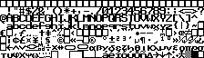

simple hello world:

hello world using global variables, functions and constants:

This is a specification of flow_chart esoteric language.
flow_chart is high-level, imperative (routine-based), interpreted language, whose inputs are raster images of flow charts. Recursion is supported as well as common data types including strings and lists.
The source code medium of flow_chart is, unlike with most computer languages, a raster image in PNG or BMP format. However, the image should be, unlike with for example Piet, human readable as it represents a flow chart. We'll suppose the image is represented as an 2D array of RGB values, as is common, however, the language is designed to only use black and white color in order to be easily printable on paper, though other colors are allowed to be used (they'll just be ignored). The black colors means [0,0,0] RGB value, the white means [255,255,255] RGB value.
There exist four types ob blocks that the flow chart consists of, they are:
The bloocks look like this:

The width and height of the blocks doesn't matter, but they cannot be empty so the theoretical minimum size depends on the size of a single text character. The block border must always be black and one pixel wide. The function start block must always have three-pixel wide border. The directive border must have double border consisting of one black, one non black and one black pixels, as in the picture. The branching block left (right) border must be a line that starts going one pixel left (right) and one down, then at some point it must change to going one pixel right (left) and one down, before it connects to the bottom border line of the block. Therefore other possible valid blocks can look like this:
The following examples are wrong:
A block must always contain a non-empty string. The string can be placed anywhere inside the block, it can even touch the border, but it must not overlap it. The text must be written in black color and it must use the font described in this document.
The blocks are connected using one-pixel wide straight (horizontal or vertical) lines with arrows (which represent the control flow) as in the picture:

The lines can overlap in a way that's apparent from the picture - one of the lines must have a one pixel white border around it in order to distinguish the two lines from each other. The arrow must have exactly the shape as in the picture, it can be pointing in each of four directions (left, right, up, bottom).
Each line must always be connecting exactly two blocks that are connected to the same function block (that means there can be no goto from within one function to another). It doesn't matter at which point the line comes from or into a block or a line (its direction is decided by the arrow) with the exception of branching block, where the input and "then" lines must come either to/from the top border or to/from bottom border and the "else" line must come from the tip of either left or right border line. The followinf picture shows some valid block connections:

The folowing examples are wrong:

Comments can be writen (or drawn) anywhere as long as they are other color than black and they do not interfere with the code. The reason for this is that the interpreter only recognises black and non-black pixels.
The language uses its own fixed size extended ASCII font to represent text elements. The character size is 7 × 8 pixels and there is exactly one pixel space between the characters. The font characters look like this (starting from top left, going to bottom right with 1 pixel space between rows and columns)
Language interpreters may include the possibility to provide custom font maps but the program is then formally not in pure flow_chart which only supports the font given above.
The language is case-sensitive. The following grammar describes the syntax of the language text elements:
| <CMD> | ➝ | <ASSIGN> | <CALL> | return <EXP> |
| <ASSIGN> | ➝ | <VAR> ← <EXP> | <INIT> |
| <INIT> | ➝ | list |
| <VAR> | ➝ | <IDENTIFIER> | <IDENTIFIER> [ <EXP> ] |
| <EXP> | ➝ | ( <EXP> ) | <VAR> | <CALL> | <CONST> | <EXP> <OP> <EXP> |
| <OP> | ➝ | + | - | ÷ | / | * | × | % | |
| <CONST> | ➝ | <INT> | <FLOAT> | <STRING> | <BOOL> |
| <COND> | ➝ | <EXP> <CMP> <EXP> |
| <CMP> | ➝ | = | ≠ | "<" | ">" | ≥ | ≤ |
| <CALL> | ➝ | <IDENTIFIER> ( <PARAMS> ) |
| <FUNC> | ➝ | <IDENTIFIER> ( <PARAM_LIST> ) |
| <DIR> | ➝ | uses <PATH> | <IDENTIFIER> = <CONST> | <IDENTIFIER> ← <CONST> |
Some of the above nonterminals are described by regexps:
| <IDENTIFIER> | := | ([a-Z] | "_") (([a-Z] | [0-9] | "_")*) |
| <FLOAT> | := | |
| <BOOL> | := | "true" | "false" |
| <STRING> | := | \" () \" |
The language keywords (that of course can't be used as identifiers) are shown in the following list:
There are four atomic and one composite data types in flow_chart. These are:
global variables?
overloading?
Recursion, even indirect, is allowed. Parameters of atomic data types (int, float, string and bool) are passed by value, lists are passed by reference. The function can return any atomic data type, lists can't be returned.
simple hello world:
hello world using global variables, functions and constants: